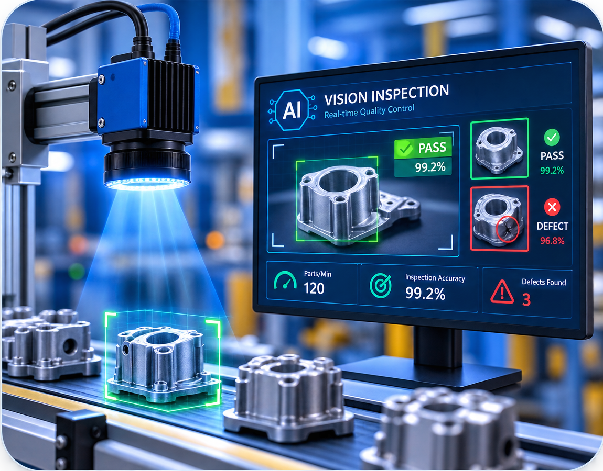
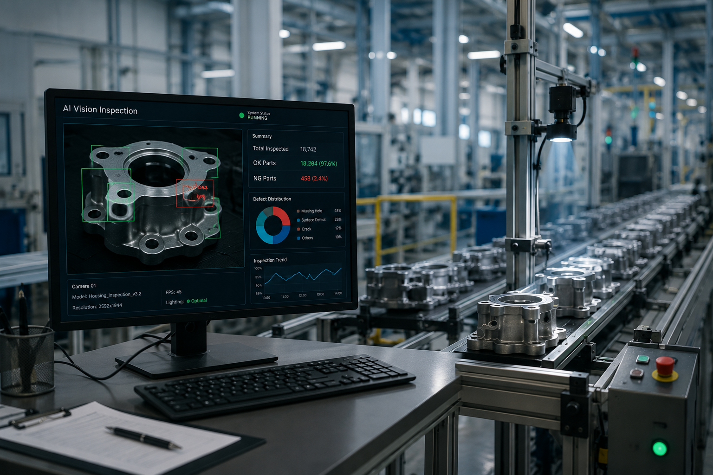
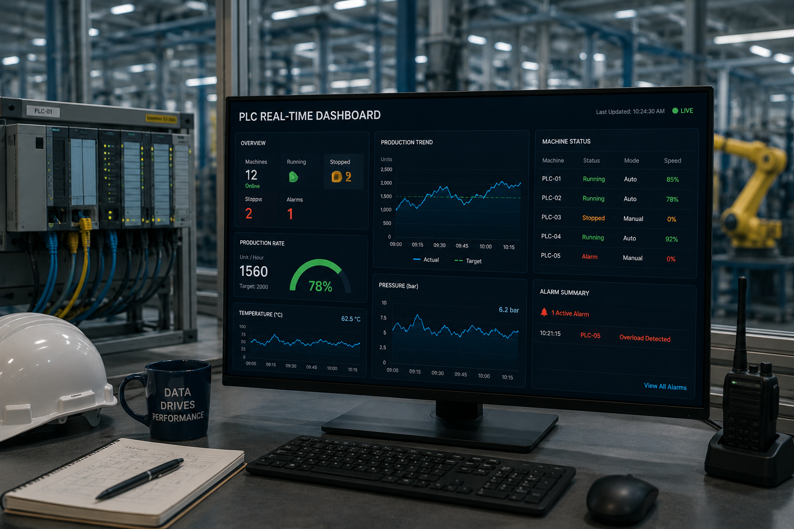
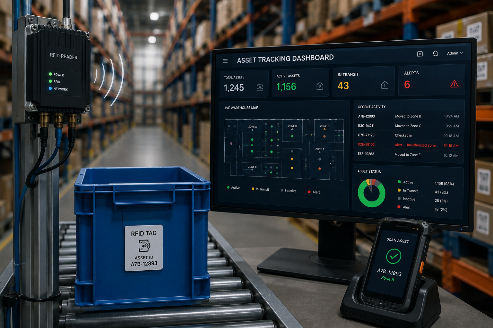

We help industries improve productivity, quality, and operational efficiency by combining PLC automation, AI-powered machine vision, industrial software, and IoT platforms into practical, scalable solutions that deliver measurable business value.
How Our AI Vision Works
Combining cutting-edge technology with deep industry knowledge to deliver transformative solutions.

Advanced computer vision for defect detection, object counting, OCR, and quality inspection.
Connect machines, sensors, and systems for real-time monitoring and intelligent automation.
Custom web, mobile, and enterprise applications built with modern technologies.
Seamless data connectivity between PLCs, ERPs, and cloud dashboards for full visibility.
Purpose-built solutions that solve real industrial challenges with precision and intelligence.
AI-powered visual inspection for defect detection, object counting, and quality assurance in production lines.
Learn More → 02Process automation, machine communication, and efficiency improvement through intelligent systems.
Learn More → 03Sensor-based monitoring, remote device control, and real-time alerts for complete operational visibility.
Learn More → 04Error prevention and assembly validation systems that ensure mistake-proof manufacturing workflows.
Learn More → 05End-to-end product tracking, inventory management, and asset monitoring with barcode and RFID technology.
Learn More →Let's discuss your unique requirements and build something extraordinary.
Get in TouchSee how we've helped businesses transform their operations with intelligent technology.

Automated visual inspection system detecting scratches, dents, and surface defects with 99% accuracy.

Live data visualization connecting PLC systems to cloud dashboards for instant operational insights.

Automated RFID asset tracking across warehouse zones — real-time location, movement history, and instant inventory reconciliation.